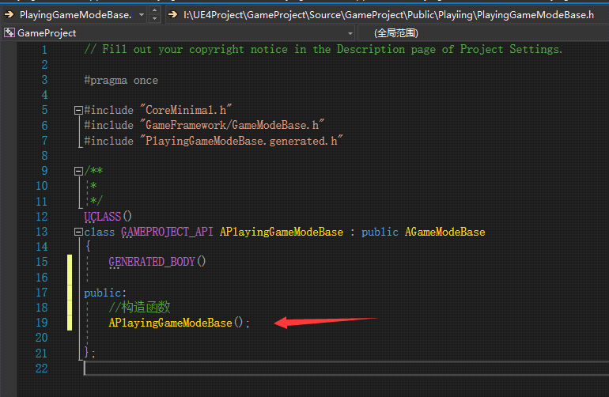
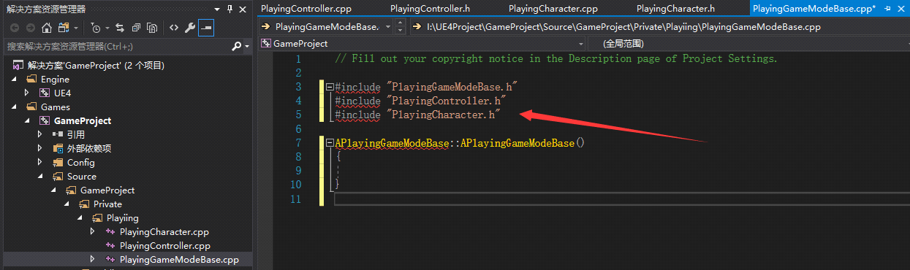
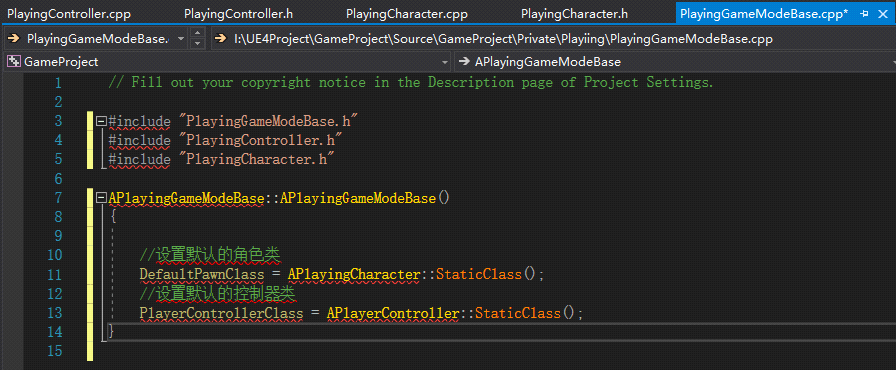
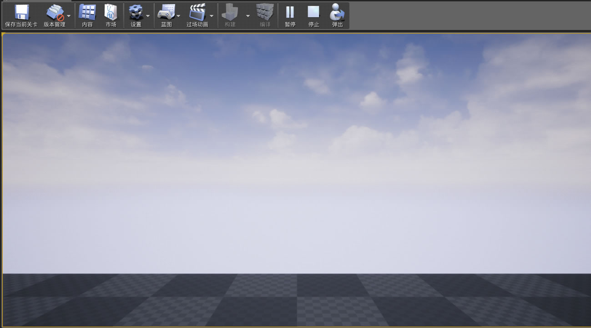

UE4设置默认角色和控制器
上一节我们设置了默认地图和关卡，这一节我们来设置默认的角色和控制器和默认地图不一样，默认角色和控制器需要设置在 GameMode 里面。
1) 打开 VS 编辑器， 打开“APlayingGameModeBase.h”文件，声明一个构造函数：
2) 在“APlayingGameModeBase.cpp”文件中创建构造函数实现，然后在 #include "PlayingGameModeBase.h" 头文件的下面添加 #include "PlayingController.h" 和 #include "PlayingCharacter.h" 头文件。
3) 在构造函数中添加以下代码：
这样，我们就设置好了默认角色和默认控制器.然后我们编译一下，编译好了之后我们在 UE4 编辑器里面点击Play，我们会发现视口被锁定了无法移动，那是因为我们还没有写视角和移动的逻辑，下一节将会实现这些功能。
1) 打开 VS 编辑器， 打开“APlayingGameModeBase.h”文件，声明一个构造函数：

2) 在“APlayingGameModeBase.cpp”文件中创建构造函数实现，然后在 #include "PlayingGameModeBase.h" 头文件的下面添加 #include "PlayingController.h" 和 #include "PlayingCharacter.h" 头文件。

3) 在构造函数中添加以下代码：

对代码的说明：
- DefulatPawnClass 是我们进入地图的时候默认控制的角色；
- PlayerControllerClass 是我们进入地图的时候默认的角色控制器。
这样，我们就设置好了默认角色和默认控制器.然后我们编译一下，编译好了之后我们在 UE4 编辑器里面点击Play，我们会发现视口被锁定了无法移动，那是因为我们还没有写视角和移动的逻辑，下一节将会实现这些功能。

关注公众号「站长严长生」，在手机上阅读所有教程，随时随地都能学习。内含一款搜索神器，免费下载全网书籍和视频。

微信扫码关注公众号